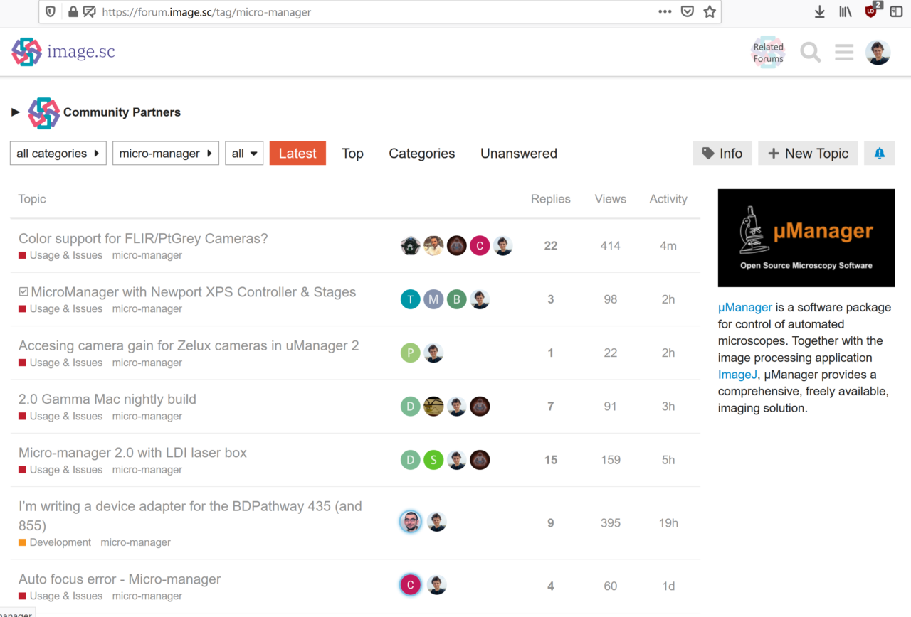
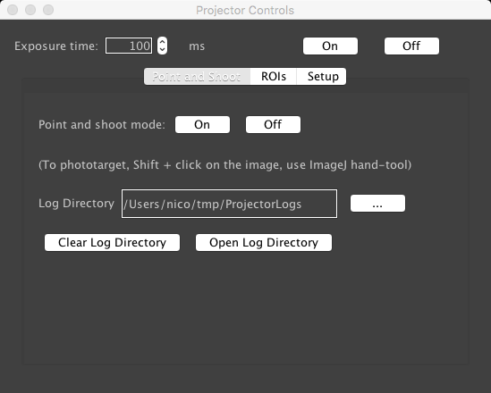
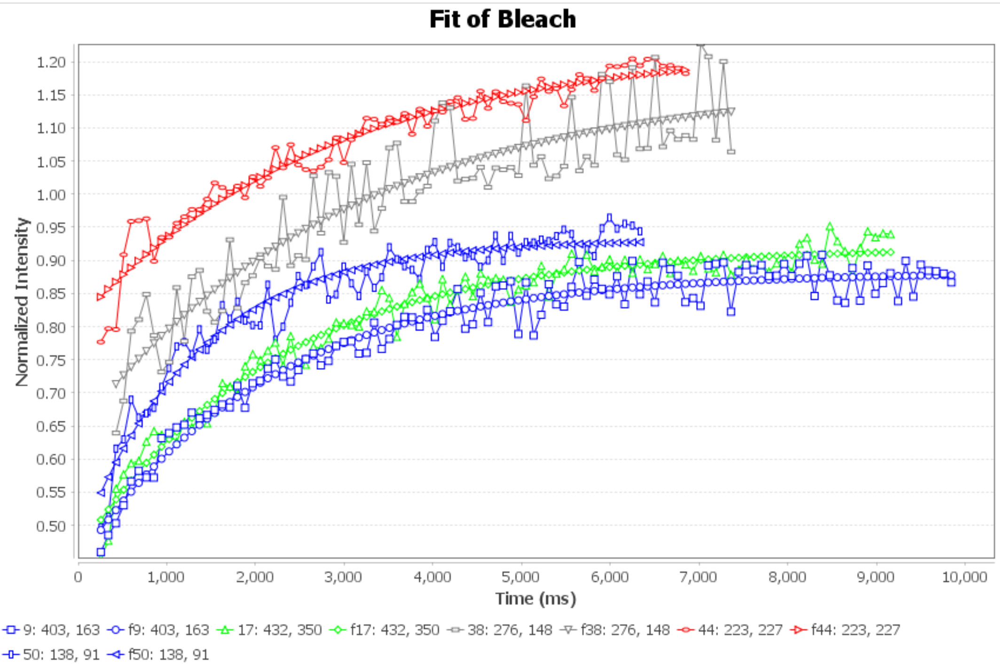
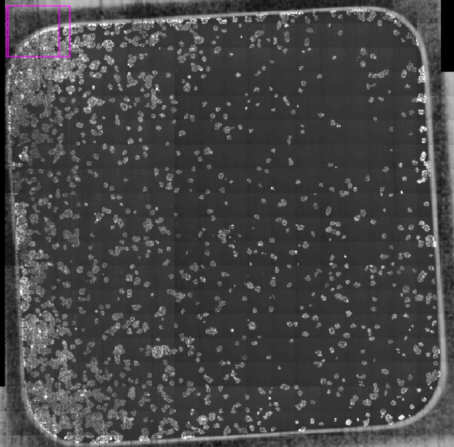

Nico Stuurman, 2020-03-12
Micro-Manager related activities

- Daily support session: image.sc
- Release 2.0, ever?
- Move website (ongoing, next month?)
Micro-Manager related activities
https://nicost.github.io/I2K-MM


Micro-Manager related activities
- Pycro-manager
- White paper on C++ code layer
- Scripting workshop next week
Automated FRAP analysis
Jess Sheu-Gruttadauria

Screening CRISPR knockouts using FRAP
Issues:
Stability of alignment
Screening CRISPR knockouts using FRAP
Issues:
Easier with air objectives
Screening CRISPR knockouts using FRAP
Issues:
Manual bleaching is too laborious
Screening CRISPR knockouts using FRAP
Issues:
Manual bleaching is too laborious
Screening CRISPR knockouts using FRAP
Issues:
Manual bleaching is too laborious
Screening CRISPR knockouts using FRAP
Issues:
Manual bleaching is too laborious

Screening CRISPR knockouts using FRAP
Issues:
Analysis not always great
Screening CRISPR knockouts using FRAP
Issues:
Map results back on imaging well

CZI Imaging Scientist
The Chan Zuckerberg Initiative (CZI) seeks to support the work of up to 15 Imaging Scientists who will work at the interface of biology, microscopy hardware, and imaging software at imaging core facilities across the world.....
The primary goal of the program is to increase interactions between biologists and technology experts. The Imaging Scientists will have expertise in imaging hardware or software.........
The award period is three years plus an additional two years, awarded as a separate grant, if the Imaging Program passes a review at year three.
Saul Kato
DeLaine Larsen
Kara McKinley
SECRET! EMBARGO!
That was all!
Kara McKinley